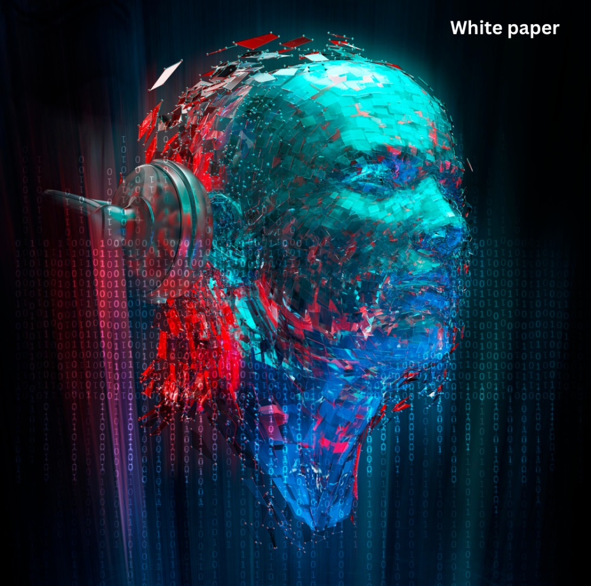

NEBULA White paper
NUBULA is a groundbreaking sci-fi game that seamlessly integrates cryptocurrency into its gameplay mechanics, offering players a revolutionary gaming experience. Set in a distant future where humanity has colonized the stars, NEBULA combines immersive storytelling, thrilling action, and innovative blockchain technology to create a virtual universe unlike any other.
1. Introduction:
In NEBULA, players embark on an epic journey across the galaxy, exploring alien worlds, engaging in fierce battles, and uncovering the mysteries of the universe. What sets NEBULA apart is its utilization of cryptocurrency as the primary in-game currency, enabling players to buy, sell, and trade virtual assets with real-world value.
2. Gameplay Features:
True Ownership: Every in-game asset, from spaceships and weapons to rare artifacts, is tokenized on the block-chain, giving players true ownership and the ability to transfer, trade, or sell their assets both within and outside the game.
Decentralized Economy: NEBULA features a player-driven economy powered by cryptocurrency, where supply and demand dictate prices, and players can earn rewards for their contributions to the game's ecosystem.
Provably Fair Gameplay: Through the use of smart contracts and block-chain technology, NEBULA ensures that gameplay mechanics, such as loot drops and PvP battles, are transparent and verifiable, providing players with a fair and secure gaming experience.
Community Governance: NEBULA is governed by a decentralized autonomous organization (DAO), allowing players to participate in decision-making processes related to game updates, development priorities, and community events.
3. Cryptocurrency Integration:
NEBULA utilizes its native cryptocurrency coin ($NBLA), as the primary medium of exchange within the game. $NBLA can be earned through gameplay activities, purchased on cryptocurrency exchanges, or obtained through in-game rewards.
Players can use $NBLA to purchase virtual goods and services, trade with other players on decentralized marketplaces, or stake their holdings to earn passive income within the game, Additionally, NEBULA features built-in support for interoperability with external cryptocurrencies, allowing players to seamlessly exchange $NBLA for other digital assets or fiat currencies.
4. Security and Transparency:
By leveraging block-chain technology, NEBULA ensures the security and integrity of in-game transactions, mitigating the risk of fraud, hacking, or manipulation, All in-game activities are recorded on the blockchain, providing players with a transparent and auditable record of their gameplay history and transactions, NEBULA prioritizes user privacy and data protection, implementing robust encryption and decentralized storage solutions to safeguard player information.
5. Conclusion:
NEBULA represents the future of gaming, where cryptocurrency and blockchain technology converge to create immersive, decentralized, and player-centric experiences. With its innovative gameplay features, transparent economy, and community-driven governance model, NEBULA sets a new standard for sci-fi gaming in the digital age.
Contact us
© Nebula 2025 All right reserved.